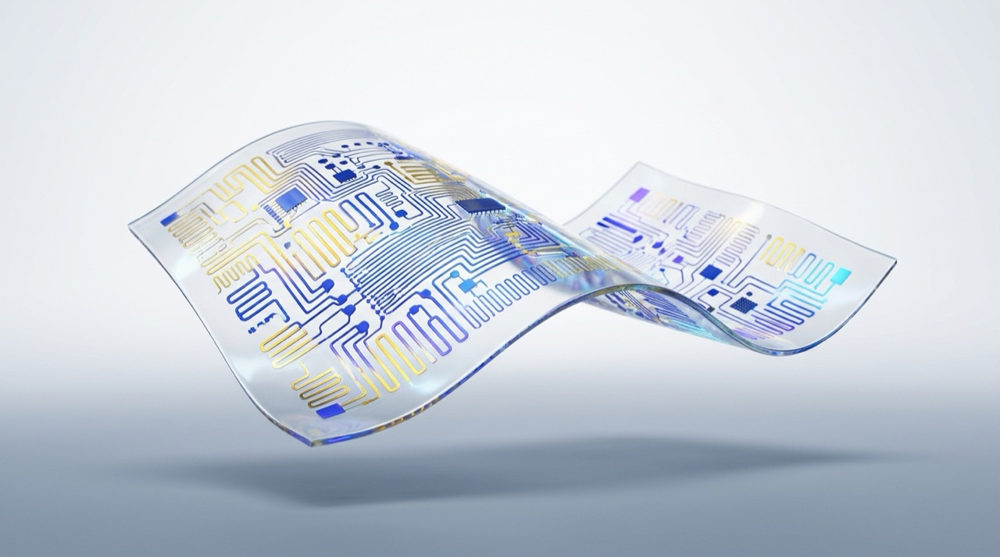

유연·웨어러블 소자 (Flexible & Wearable Devices)
휘어지고 피부에 자연스럽게 밀착되면서도 고성능을 유지하는 초박형 유연 전자소자를 개발합니다.

왜 중요한가요?
딱딱한 실리콘 칩은 조금만 구부려도 부러집니다. 반면 원자 한 층 두께의 2차원 반도체는 종이보다 훨씬 부드럽게 휘어지면서도 높은 전기적 성능을 그대로 유지합니다. 덕분에 피부에 붙이는 헬스케어 패치, 접고 마는 디스플레이, 로봇용 전자피부(e-skin)의 핵심 소재로 주목받고 있습니다.
ONE 1ab 핵심 연구 방향
- 반복적인 굽힘·변형에도 성능이 유지되는 유연 2차원 트랜지스터·메모리·투명 회로
- 피부 밀착형 24시간 생체 신호 모니터링 웨어러블 전자 패치 개발
- 기계적 피로도 및 굽힘 신뢰성 정량 분석과 패키징 최적화
핵심 작동 원리
- 본질적 기계적 유연성: 굽힘 응력은 두께에 비례하므로 1나노미터 미만의 2차원 박막은 크게 구부려도 깨지지 않고 안정적으로 작동합니다.
- 응력 분산 회로 설계: 구불구불한(serpentine) 배선 구조와 중립면(neutral plane) 패키징으로 수천 회 이상 반복 굽힘에도 내구성을 유지합니다.
- 저온 유연 기판 공정: 플라스틱(PI·PET)이나 생체 친화적 탄성체 위에 손상 없이 고성능 2차원 소자를 집적하는 공정을 구현합니다.
기대 응용 분야
피부 부착형 헬스케어 패치
불편함 없이 심박·체온·생체 신호를 실시간 추적하는 패치
폴더블·롤러블 디스플레이
접고 말아도 선명하게 구동되는 초박형 투명 구동 백플레인
소프트 로봇 전자피부(E-Skin)
촉각과 온도를 느끼는 로봇·의수용 유연 감각 피부